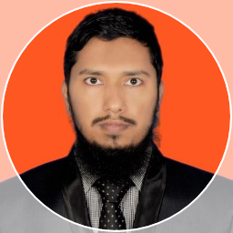

|  |
Mahadi HasanSr. Executive, Quality Management SystemQuality AssurnaceVertex RMG DivisionPhone: +8801753529237Email: mahadih16@gmail.comAdress: Natunpara, Tetuljhora, Hemayetput, Savar, Dhaka-1340 |
| SL. | Designation | Organization | Department | section | Duration | Timeline | Remarks |
|---|---|---|---|---|---|---|---|
| 1 | Senior Executive | Quality Assurnace | Vertex Wear Ltd. | Quality Management System (QMS) | 2 Years, 3 Months | From August 2020 to Continue | Promoted form Executive |
| 2 | Executive | Quality Assurnace | Vertex Wear Ltd. | Quality Management System (QMS) | 1 Years, 6 Months | From January 1, 2019 to July 2020 | Promoted form Management Trainee Officer (MTO) |
| 3 | Management Trainee Officer (MTO) | Human Resource (HR) | Vertex Wear Ltd. | Production, Qualty Control, Industrial Engineering, Merchandising, Complinace, Admin, etc. | 6 Months | From July 2018 to January 2019 | Joined as Management Trainee Officer (MTO) |